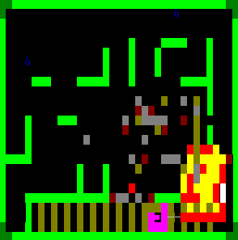
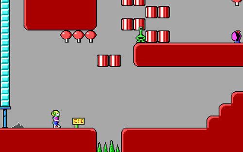
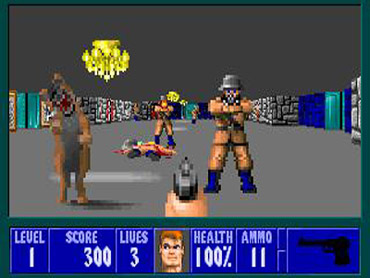
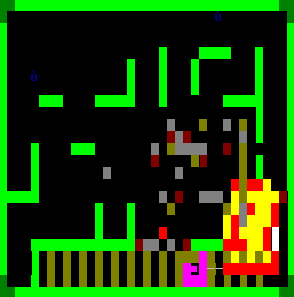
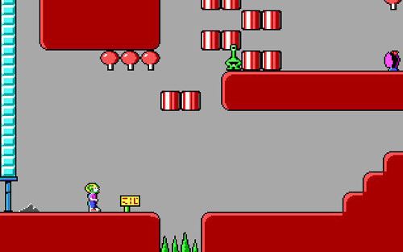
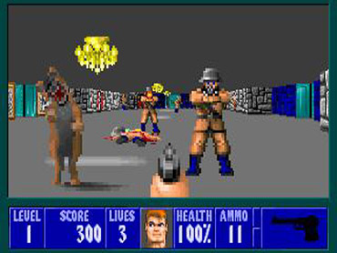

Started way back in the early 90s with
Pyro 2

Commander Keen

Wolfenstein 3D

and the like
. I used to have a pretty hefty collection of 5.25" floppy disk games, still have a few around.

Started way back in the early 90s with
Pyro 2

Commander Keen

Wolfenstein 3D

and the like
. I used to have a pretty hefty collection of 5.25" floppy disk games, still have a few around.
I started on the consoles… my first one was the mighty “Dynavision III” I suppose you never heard of it… the i jumped to the SNES Then to the PS1 and almost at the same time i started on with the PC. and never moved again.
Let’s see… Started in the 80’s on a Colecovision, then moved to the Commodore 64 where I played Might & Magic 1 to 3. Then bought a low powered no name brand PC where I played Wolfenstien 3d, doom, heretic, descent, ect… Then bought a more powerful PC kept it for about two years then built my own (the one I have now). I hope to build a more powerful PC soon. The one I have now is about ten years old.
I started gaming on a windows98 comp. Lego Loco ftw!
I’ve rarely played on consoles and I’m sure many of you are aware I am a pcfanboy and dislike consoles intensely.
I started with both the PC and consoles. I had Half-Life and a few other games on my computer, and had Super Mario 64 and a bunch of other games for my N64, then I got my PS2, and had a Pentium 3 that I played a lot of games that could barely run on it. Finally got myself a decent computer and I play exclusively PC games and despise consoles.
I can’t say I understand why. I mean, pc’s are great for games, usually better. But still, consoles have their merits. For one, their designed to be extremely simple to use (until the current gen at least). They’re also much cheaper.
I don’t see why anyone would simply dislike consoles. They’re not usually as good, but they can still be a lot of fun, and lack many of the PC’s pitfalls (Problems of overcomplexity, like giving the user the ability to mess with hardware and operating software. These privileges can help, but can be a pain if all you want to do is play a game, and can result in annoying system problems of compatibility, crashing, low fps, issues much much rarer in console gaming)
Started with SNES in mid-90’s, inherited a PC shortly afterward and played Jedi Knight and some other old-school games. Have been using both consoles and PCs ever since. Recently though I’ve been playing mostly PC games, while my 360 mainly gets used to play Rock Band. And a while back, FFXIII (someday I will finish that freaking game!). Come to think of it though, I pretty much only buy games for consoles nowadays if the ones I want aren’t available on PC, which is getting less and less frequent.
I started on the PC, bought an xbox 360 not very long ago, and aiming is hard, but i’m getting better 
I hate consoles mainly because they are severely hurting pc gaming.
What garthbartin said. Not to mention most games on consoles are severely dumbed down. And I’ve played games on consoles that crashed, locked up, or had huge fps problems.
The minor complexity of the PC works in it’s favour, means we have less idiots than the consoles. That isn’t really saying much though.
I have a PC that can run any game I’ve wanted for 500$ with monitor (do consoles come with T.V.s no so factor that in) sure they don’t look great because of an intergrated card but…
My PC can indefently surf the web regardless of what console I bought, I can edit photos and videos, I can go on ALL social networking sites and IM systems. I can also do all sorts of work stuff on it, buy music and movies and such, there are so many games that I can simply buy on steam.
Now a console is at least 200$ throw in a T.V. equvilent of my average monitor and its like 300$ (decent TVs cost more then decent monitors  ) buy an extra controller its 360$ now because you bought the cheapest thing you must pay for LIVE 410$ now. Oh but now with your fancy downloads you must buy a HDD not just a memory stick 440$ and thats not including batterys or other 100% optional stuff.
) buy an extra controller its 360$ now because you bought the cheapest thing you must pay for LIVE 410$ now. Oh but now with your fancy downloads you must buy a HDD not just a memory stick 440$ and thats not including batterys or other 100% optional stuff.
Your consoles almost cost as much as my PC AND DO LESS. Oh wait it does have more of something… 12 year olds
You’re forgetting the great exclusive you can only play on console. Besides most people buy consoles to play games not to go on fagbook.
I began with Pong. Then went to the Atari 2600, then 5200, then 7800. Then onto ColecoVision. Finally from there, the NES, the Genesis, the TurboGrafx-16, Game Gear (yeah, shut up, kid), SNES, VirtualBoy (yes, I had one of these), Dreamcast, N64, Playstation 1, Playstation 2…then I kind of fell out of the console market and went exclusively to Quake and then after Quake 2, went on to Half Life. I haven’t played much in the way of video games since.
A very interesting point, I think developers could do more to work with PCs and address the problems that discourage some players
I already had a TV. I use it for watching television.
Xbox 360 with controllers and HDD : £100 (154 of your fancy american dollars ). Job done. Fair point about Live, I’ve never paid for it and never will. Its ridiculous to charge people for that. Luckily I’ve never really been into online gaming. I’ve spent an extra £25 on a bigger hard drive since then, but honestly: how much do you guys spend on PC upgrades?
If you play games on your PC and spend your weekends buying consoles to feed to your pet sharks, then that’s your business . But your energy may be better used opposing sensationalists who campaign against gaming as a whole, rather than against those who just don’t have the money for a PC (one day…)
Either way its campaigning against people who don’t know what they are talking about
I’m just saying in the end as a gaming platform the PC is better. If you’ve got the extra money and want to buy a toy go ahead.
What is it with you people and :p?
In any case, you haven’t factored in the cost of a PC into your console cost projection, as you still have to buy one of those.
Ya know PCs are pretty cheap, I bet you could build one for like 300-400$ I don’t think it would be a big problem for your average console gamer.:retard:
The biggest hole in the “pcs are too expensive” argument is this; these days every modern family owns a computer. And say a decent gaming computer is only 100-200 dollars more expensive than a brand new cheap family computer. So next time you or your parents are going to buy a new computer, pitch in 100-200 dollars to make it a gaming computer and you have now gotten a decent gaming computer for LESS than the cost of a console.
Actually I’ve found console users would still buy a console even if they had the money for a pc.
The only problem, and the appeal of consoles, is value retention. Those consoles have a longer lifespan than PCs, mainly due to game development. Console game developers have a standard platform to work with and perfect during the console’s generation. In theory, PC developers have to contend with the wide range of configurations, including the cutting edge, at all times. In the end, these software development differences affect consumer decisions…and the games themselves.
BTW, i am primarily a pc gamer.
Founded in 2004, Leakfree.org became one of the first online communities dedicated to Valve’s Source engine development. It is more famously known for the formation of Black Mesa: Source under the 'Leakfree Modification Team' handle in September 2004.